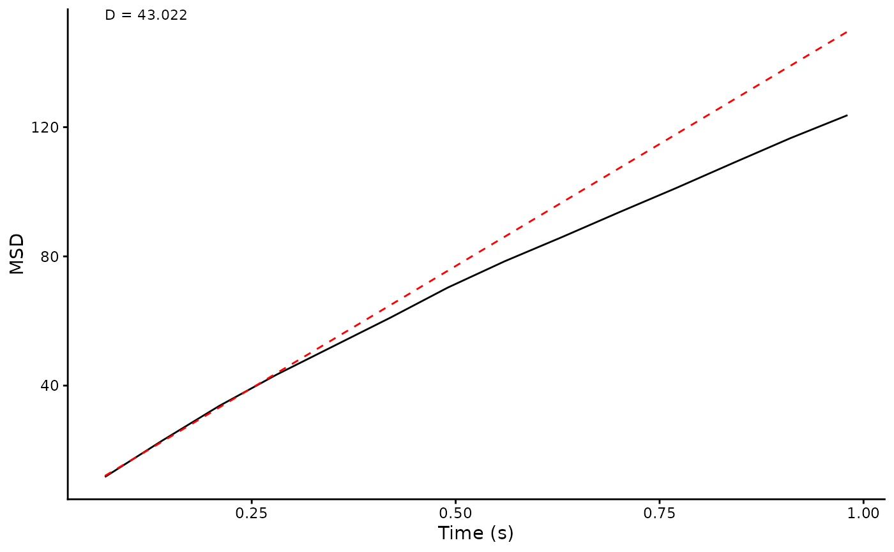

Generate a plot of MSD over a series of increasing time lags. Input is the output from CalculateMSD(), so the plot will display the ensemble or time-averaged MSD (whatever was requested) A fit to the first four points is displayed to evaluate alpha. Diffusion coefficient from this fit is displayed top-left.
Usage
plot_tm_MSD(
df,
units = c("um", "s"),
bars = FALSE,
xlog = FALSE,
ylog = FALSE,
auto = FALSE
)Arguments
- df
MSD summary = output from calculateMSD()
- units
character vector to describe units (defaults are um, micrometres and s, seconds)
- bars
boolean to request error bars (1 x SD)
- xlog
boolean to request log10 x axis
- ylog
boolean to request log10 y axis
- auto
boolean to request plot only, TRUE gives plot and D as a list
Examples
xmlPath <- system.file("extdata", "ExampleTrackMateData.xml", package="TrackMateR")
datalist <- readTrackMateXML(XMLpath = xmlPath)
#> Units are: 1 pixel and 0.07002736 s
#> Spatial units are in pixels - consider transforming to real units
#> Extracting spot data...
#> Matching track data...
#> Calculating distances...
data <- datalist[[1]]
# use the ensemble method and only look at tracks with more than 8 points
msdobj <- calculateMSD(df = data, method = "ensemble", N = 3, short = 8)
msddf <- msdobj[[1]]
plot_tm_MSD(msddf, bars = FALSE)
